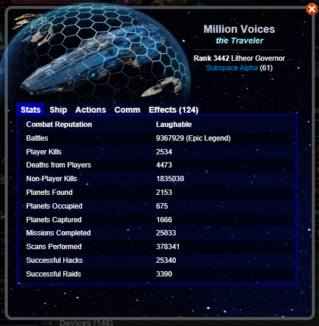
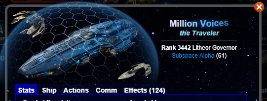
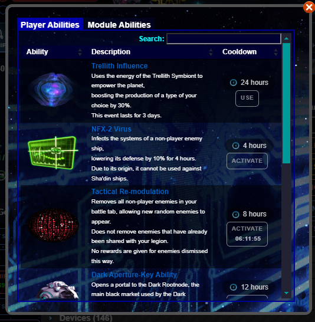
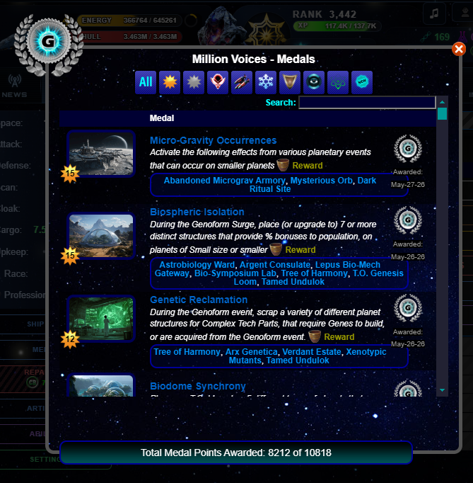
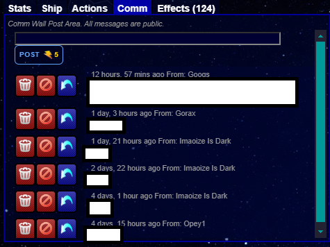

Ship Stats Window
You can access this window from the Ship tab

This window displays:
A player display area
A Player Stats tab
A Ship tab
An Actions tab
Your player comm
Your Effects tab
Player Display
The area at the top of this window shows your ship, fighters, name, title, rank, race, profession, and Legion

Actions Tab
Here you can access the Abilities and Medals windows.


Comm Tab
On this tab, you can see messages sent to you by other players. You can then delete each message, block the sender, or reply to the sender.
